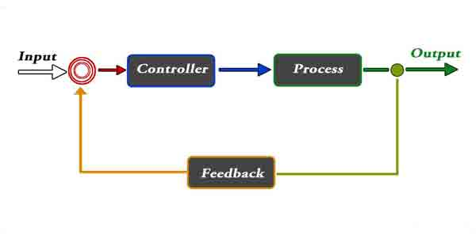
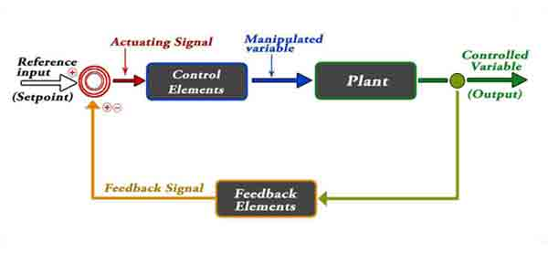
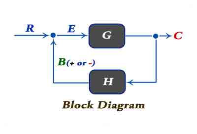

Requirement of Good Control System
Types Of Control Systems
Open Loop Control System
• Practical Examples
• Advantages
• Disadvantages
Closed Loop Control System
• Practical Examples
• Advantages
• Disadvantages
Comparison of Closed and Open Loop System
Feedback Loop of Control System
Effect of Feedback
Definition of Control System
As the human civilization is being modernized day by day the demand of automation is increasing accordingly. Automation highly requires control of devices.
A control system is a system of devices or set of devices, that manages, commands, directs or regulates the behavior of other device(s) or system(s) to achieve desire results. In other words the definition of control system can be rewritten as A control system is a system, which controls other system.
In recent years, control systems plays main role in the development and advancement of modern technology and civilization. Practically every aspects of our day-to-day life is affected less or more by some control system. A bathroom toilet tank, a refrigerator, an air conditioner, a geezer, an automatic iron, an automobile all are control system. These systems are also used in industrial process for more output. We find control system in quality control of products, weapons system, transportation systems, power system, space technology, robotics and many more. The principles of control theory is applicable to engineering and non engineering field both.
Requirement Of Good Control System
Accuracy: Accuracy is the measurement tolerance of the instrument and defines the limits of the errors made when the instrument is used in normal operating conditions. Accuracy can be improved by using feedback elements. To increase accuracy of any control system error detector should be present in control system.
Sensitivity: The parameters of control system are always changing with change in surrounding conditions, internal disturbance or any other parameters. This change can be expressed in terms of sensitivity. Any control system should be insensitive to such parameters but sensitive to input signals only.
Noise: An undesired input signal is known as noise. A good control system should be able to reduce the noise effect for better performance.
Stability: It is an important characteristic of control system. For the bounded input signal, the output must be bounded and if input is zero then output must be zero then such a control system is said to be stable system.
Bandwidth: An operating frequency range decides the bandwidth of control system. Bandwidth should be large as possible for frequency response of good control system.
Speed: It is the time taken by control system to achieve its stable output. A good control system possesses high speed. The transient period for such system is very small.
Oscillation: A small numbers of oscillation or constant oscillation of output tend to system to be stable.
Types Of Control Systems
There are two main types of control system. They are as follow
- Open loop control system
- Closed loop control system
Open Loop Control System
A control system in which the control action is totally independent of output of the system then it is called open loop control system. Open loop system is also called as Manual control system. Fig - 1 shows the block diagram of open loop control system in which process output is totally independent of controller action.
Fig - 1
Practical Examples Of Open Loop Control System
- Electric Hand Drier – Hot air (output) comes out as long as you keep your hand under the machine, irrespective of how much your hand is dried.
- Automatic Washing Machine – This machine runs according to the pre-set time irrespective of washing is completed or not.
- Bread Toaster - This machine runs as per adjusted time irrespective of toasting is completed or not.
- Automatic Tea/Coffee Maker – These machines also function for pre adjusted time only.
- Timer Based Clothes Drier – This machine dries wet clothes for pre – adjusted time, it does not matter how much the clothes are dried.
- Light Switch – lamps glow whenever light switch is on irrespective of light is required or not.
- Volume on Stereo System – Volume is adjusted manually irrespective of output volume level.
Advantages Of Open Loop Control System
- Simple in construction and design.
- Economical.
- Easy to maintain.
- Generally stable.
- Convenient to use as output is difficult to measure.
Disadvantages Of Open Loop Control System
- They are inaccurate.
- They are unreliable.
- Any change in output cannot be corrected automatically.
Closed Loop Control System
Control system in which the output has an effect on the input quantity in such a manner that the input quantity will adjust itself based on the output generated is called closed loop control system. Open loop control system can be converted in to closed loop control system by providing a feedback. This feedback automatically makes the suitable changes in the output due to external disturbance. In this way closed loop control system is called automatic control system. Figure below shows the block diagram of closed loop control system in which feedback is taken from output and fed in to input.

Practical Examples Of Closed Loop Control System
- Automatic Electric Iron – Heating elements are controlled by output temperature of the iron.
- Servo Voltage Stabilizer – Voltage controller operates depending upon output voltage of the system.
- Water Level Controller– Input water is controlled by water level of the reservoir.
- Missile Launched & Auto Tracked by Radar – The direction of missile is controlled by comparing the target and position of the missile.
- An Air Conditioner – An air conditioner functions depending upon the temperature of the room.
- Cooling System in Car – It operates depending upon the temperature which it controls.
- Closed loop control systems are more accurate even in the presence of non-linearity.
- Highly accurate as any error arising is corrected due to presence of feedback signal.
- Bandwidth range is large.
- Facilitates automation.
- The sensitivity of system may be made small to make system more stable.
- This system is less affected by noise.
- They are costlier.
- They are complicated to design.
- Required more maintenance.
- Feedback leads to oscillatory response.
- Overall gain is reduced due to presence of feedback.
- Stability is the major problem and more care is needed to design a stable closed loop system.
- Error between system input and system output is reduced.
- System gain is reduced by a factor 1/(1±GH).
- Improvement in sensitivity.
- Stability may be affected.
- Improve the speed of response.
Advantages OF Closed Loop Control System
Disadvantages Of Closed Loop Control System
Comparison of Closed Loop And Open Loop Control System
| Sr. No. | Open loop control system | Closed loop control system |
|---|---|---|
| 1 | The feedback element is absent. | The feedback element is always present. |
| 2 | An error detector is not present. | An error detector is always present. |
| 3 | It is stable one. | It may become unstable. |
| 4 | Easy to construct. | Complicated construction. |
| 5 | It is an economical. | It is costly. |
| 6 | Having small bandwidth. | Having large bandwidth. |
| 7 | It is inaccurate. | It is accurate. |
| 8 | Less maintenance. | More maintenance. |
| 9 | It is unreliable. | It is reliable. |
| 10 | Examples: Hand drier, tea maker | Examples: Servo voltage stabilizer, perspiration |
Feedback Loop Of Control System
A feedback is a common and powerful tool when designing a control system. Feedback loop is the tool which take the system output into consideration and enables the system to adjust its performance to meet a desired result of system.
In any control system, output is affected due to change in environmental condition or any kind of disturbance. So one signal is taken from output and is fed back to the input. This signal is compared with reference input and then error signal is generated. This error signal is applied to controller and output is corrected. Such a system is called feedback system. Figure below shows the block diagram of feedback system.

When feedback signal is positive then system called positive feedback system. For positive feedback system, the error signal is the addition of reference input signal and feedback signal. When feedback signal is negative then system is called negative feedback system. For negative feedback system, the error signal is given by difference of reference input signal and feedback signal.
Effect Of Feedback
Refer figure beside, which represents feedback system where
R = Input signal
E = Error signal
G = forward path gain
H = Feedback
C = Output signal
B = Feedback signal

 by
by